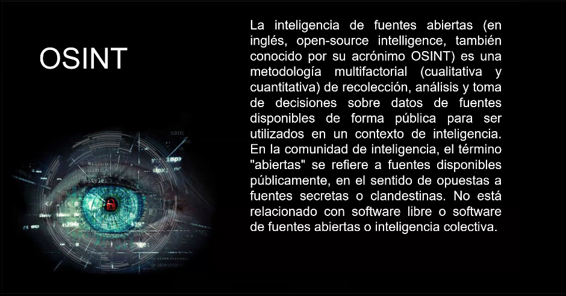
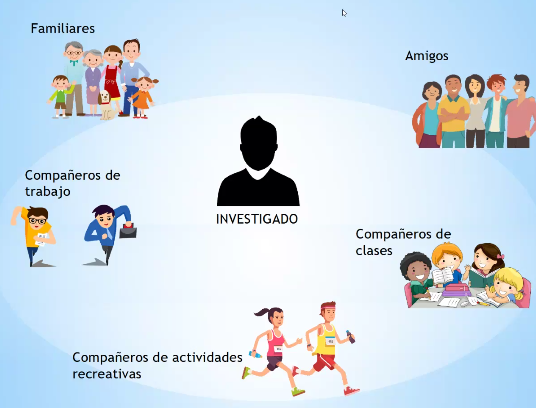
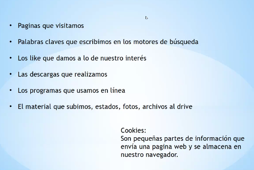
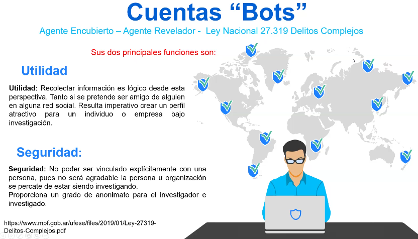
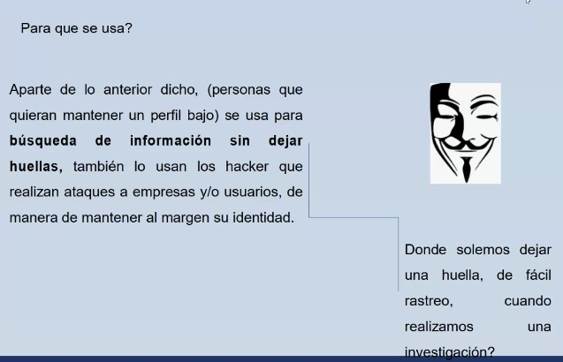
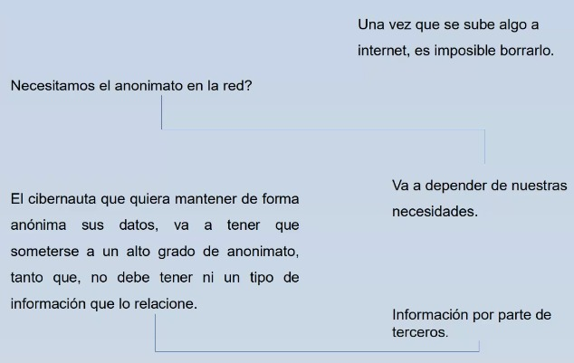

Definición de OSINT
Link al Drive
SATELITES del investigado: personas que lo rodean.
  IP PUBLICA: direccion que te asigna tu operador para identificarnos en internet cada vez que nos conectamos.
Copia bit a bit utilizando software espeífico.
Ordenar de manera estructurada datos para convertirlos en informacón.
CONJUNTO DE TECNICAS AVANZADAS QUE UN USUARIO UTILIZA PARA NAVEGAR EN LA RED SIN DEJR RASTROS.
 